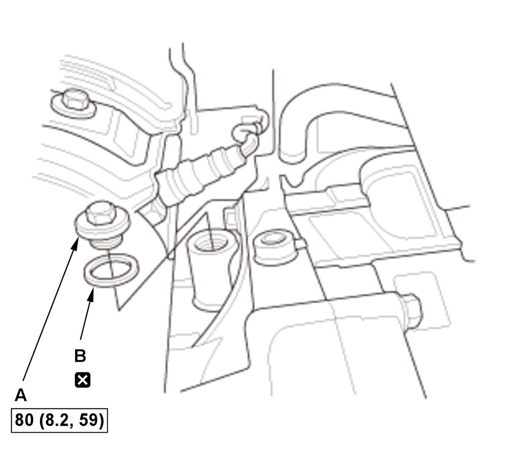

Coolant Replacement (1.5L Engine): Replacement
NOTE:
- How to read the torque specifications .
- Unless otherwise indicated, illustrations used in the procedure are for L15B7 engine (USA and Canada models).
- Expansion Tank Cap - Remove
1. Wait until the engine is cool, then carefully remove the expansion tank cap (A). - Intake Air Resonator - Remove
- Engine Coolant - Drain
1. Loosen the drain plug (A), and drain the coolant. - Cylinder Block Coolant - Drain

Courtesy of HONDA, U.S.A., INC.1. Remove the drain bolt (A). 2. After the coolant has drained, reinstall the drain bolt with a new washer (B).
3. Tighten the radiator drain plug securely.
- Intake Air Resonator - Install
- Expansion Tank Coolant - Drain
- Engine Coolant - Refill
1. Pour Honda Long Life Antifreeze/Coolant Type 2 into the expansion tank (A) to the MAX mark (B).
NOTE:- Always use Honda Long Life Antifreeze/Coolant Type 2 or Honda Extreme Cold Weather Antifreeze/Coolant Type 2. Using a non-Honda coolant can result in corrosion, causing the cooling system to malfunction or fail.
- Honda Long Life Antifreeze/Coolant Type 2 is a mixture of 50 % antifreeze and 50 % water. Honda Extreme Cold Weather Antifreeze/Coolant Type 2 is a 100% concentration coolant. Do not add water to either coolant.
- If the vehicle is regularly used in very low temperatures (under -22 deg.F (-30 deg.C)), a 60% concentration of coolant should be used.
Operation Vehicle Usage (Desired Mixture) Current Mixture Coolant Drain Add Amount of Honda Extreme Cold Weather Antifreeze/Coolant Type 2 (100% concentrate) Then add Honda Long Life Antifreeze/Coolant Type 2 (50/50) Coolant Change Normal Area (50/50) 50/5060/40unknown Drain radiator, engine block, and expansion tank None Top off the cooling system Very Cold Area (60/40) 50/50unknown Drain radiator, engine block, and expansion tank About 1.6 L (52 fl oz) 60/40 About 1.1 L (35 fl oz) Engine Overhaul Normal Area (50/50) - - None Very Cold Area (60/40) - - About 1.6 L (52 fl oz) Coolant Winterizing Very Cold Area (60/40) 50/50 Drain approximately 2.0 L (68 fl oz) from radiator About 1.6 L (52 fl oz) unknown* Drain radiator, engine block, and expansion tank *: When you want to winterize the coolant with the minimum amount of coolant change but the current coolant concentration in the vehicle is unknown, you must drain all coolant from the cooling system.
L15B7 engine (USA and Canada models): Engine Coolant Capacities (Including the expansion tank capacity of 0.8 L (0.21 US gal)) At Coolant Change: 5.1 L (1.35 US gal) After Engine Overhaul: 7.6 L (2.01 US gal) L15BY engine: Engine Coolant Capacities (Including the expansion tank capacity of 0.6 L (0.16 US gal)) At Coolant Change: 5.0 L (1.32 US gal) After Engine Overhaul: 7.5 L (1.98 US gal) L15BA engine: Engine Coolant Capacities (Including the expansion tank capacity of 0.6 L (0.16 US gal)) At Coolant Change M/T: 4.9 L (1.29 US gal) CVT: 5.0 L (1.32 US gal) After Engine Overhaul M/T: 7.4 L (1.95 US gal) CVT: 7.5 L (1.98 US gal) L15B7 engine (Mexico models): Engine Coolant Capacities (Including the expansion tank capacity of 0.6 L (0.16 US gal)) At Coolant Change: M/T: 4.9 L (1.29 US gal) CVT: 5.0 L (1.32 US gal) After Engine Overhaul: M/T: 7.4 L (1.95 US gal) CVT: 7.5 L (1.98 US gal) L15B7 engine (USA and Canada models):
L15B7 engine (Mexico models)/L15BA engine/L15BY engine:
- Engine Coolant - Air Bleed
1. Loosely install the expansion tank cap. 2. Start the engine and let it run until the cooling fan comes on at least twice. Do not operate the air conditioning system.
3. Turn off the engine. Check the level in the expansion tank, and add Honda Long Life Antifreeze/Coolant Type 2, if needed.
- Engine Coolant Leak - Check
1. Put the expansion tank cap securely, then start the engine again, and check for leaks. 2. Clean up any spilled engine coolant.
- Maintenance Minder - Reset (With Maintenance Minder System)
1. If the Maintenance Minder required to replace the engine coolant, reset the Maintenance Minder with the gauge (see "Resetting the Maintenance Minder"). If the Maintenance Minder did not require to replace the engine coolant, reset the Maintenance Minder with the HDS (see "Resetting the Individual Maintenance Items").